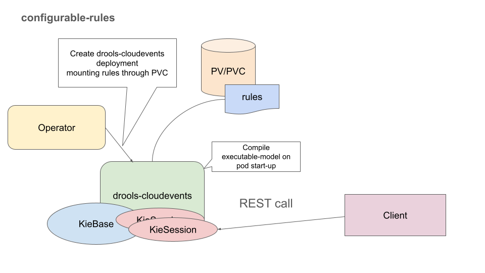
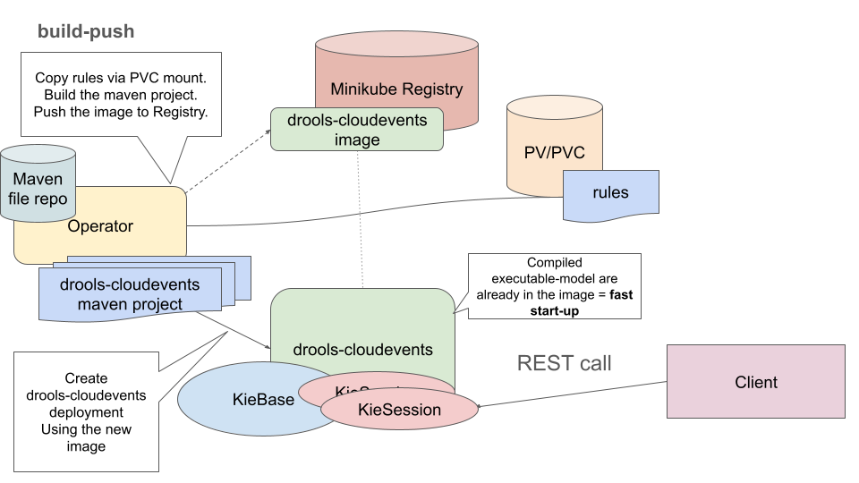

Processing CloudEvents with Drools
drools-cloudevents ( https://github.com/mariofusco/drools-cloudevents ) is a standalone service which processes CloudEvents, evaluating them against a set of rules expressed in a simple YAML format.
Currently, it’s a simple stateless service, but we consider enhancements based on Drools capabilities. E.g. stateful service, events correlation, persistence
How to use
You can run the example with Quarkus dev mode.
mvn clean compile quarkus:dev
To test the service, open a new terminal and run:
curl -v http://localhost:8080/drools/evaluate \
-H "Ce-Specversion: 1.0" \
-H "Ce-Type: fact.Measurement" \
-H "Ce-Source: io.cloudevents.examples/user" \
-H "Ce-Id: 536808d3-88be-4077-9d7a-a3f162705f78" \
-H "Content-Type: application/json" \
-H "Ce-Subject: SUBJ-0001" \
-d '{"id":"color","val":"red"}'
As you see, the payload is in JSON format.
You should get a response:
...
{"color":"red"}
Note that it is the result of the example rule.
name: org.drools.cloudevents
rules:
- name: will execute per each Measurement having ID color
when:
- given: fact.Measurement
as: $m
having:
- "id == \"color\""
then: |
results.put("color", $m.val);
Of course, you can change the rules to meet your use case.
In addition, https://github.com/mariofusco/drools-cloudevents/blob/main/README.md explains how to create a container image and run the container.
Operator
We also have an example operator for drools-cloudevents, which allows you to configure your rules in your kubernetes environment.
This operator has 2 versions:
A) Configurable-rules version
To examine this operator, please follow this README_configurable-rules.md
https://github.com/tkobayas/drools-cloudevents-operator/blob/configurable-rules/README_configurable-rules.md

This operator simply creates a deployment of drools-cloudevents. Your rules are mounted through PV/PVC and compiled to executable-model at the time of pod start-up. It means pod start-up requires some time (with a small sample rule, the build time is around 1.3 sec).
B) Build-push version
To examine this operator, please follow this README.md
https://github.com/tkobayas/drools-cloudevents-operator/blob/build-push/README.md

This operator mounts rules on the operator’s file system. Then it builds a drools-cloudevents project with maven, creates a container image and pushes the image to a private registry (e.g. minikube registry). Then, the Operator creates a deployment of drools-cloudevents with the newly pushed image. The image already contains a compiled executable-model, so it gives fast start-up.
Compared to “Configurable-rules” version,
Pros:
- Immutable container meets k8s nature
- Pod fast-start-up. E.g. when scaling up pods
Cons:
- The operator image is bigger
- It takes time on project/image build. (It was around 1.5 min in my local env — more than 1 min was used to download dependencies, even with a file repository to avoid Internet access. There may be room to improve. 7 sec for application build. 10 sec for creating/pushing a container image)
Implementation details
The operator is implemented based on quarkus-operator-sdk, especially the “ExposedApp” example : https://github.com/quarkiverse/quarkus-operator-sdk/tree/main/samples/exposedapp . It mostly relies on the default sdk behavior, so there is lots of room to tailor as a "drools-cloudevents" operator.
Conclusion
This is the first step of our PoC of "Drools in Kubernetes". We highly appreciate any feedback and requests for such cloud use cases. Thanks!